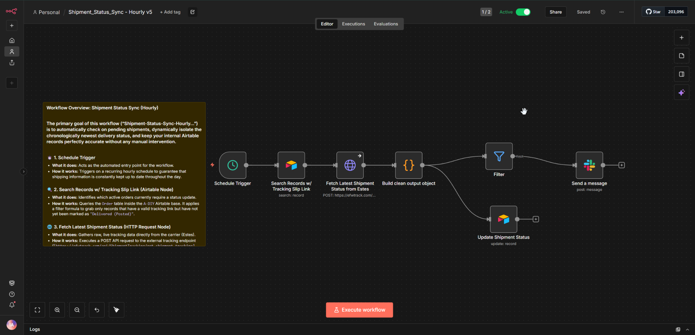
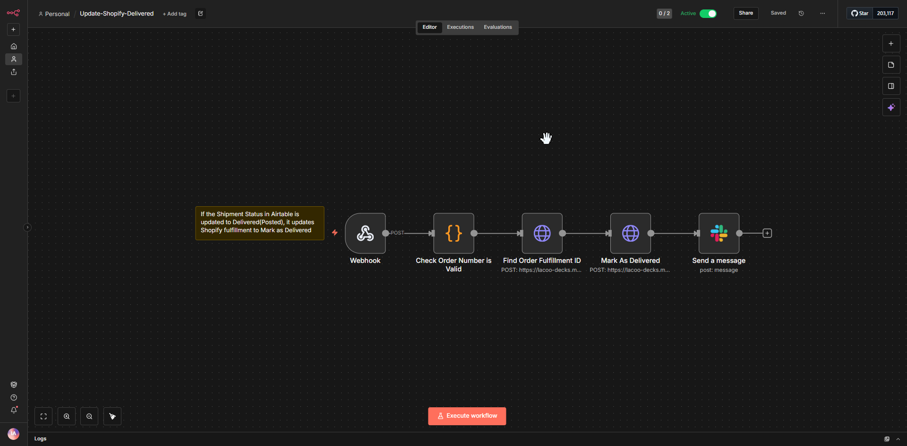

Automation systems
Real workflow patterns covering e-commerce operations, shipment tracking, fulfillment, data synchronization and internal communication.

Shopify → Airtable Order Processing
Event-driven order processing with customer lookup, product handling, Airtable records and Slack notifications.

Shipment Status Sync
Scheduled carrier-status retrieval, response cleanup, filtering, Airtable updates and operational alerts.

Shopify Fulfillment Automation
Uses a webhook and API calls to update Shopify fulfillment state when tracking information is available.

Packing List & Folder Generation
Automates Google Drive folder creation, packing-list structure, Airtable updates and team notifications.

Slack Attendance Status
Transforms Slack-triggered text into a normalized status and sends it to an internal endpoint.

Shipment → Shopify Delivery Update
Validates an order, finds the fulfillment ID, marks it delivered through an API, and notifies Slack.